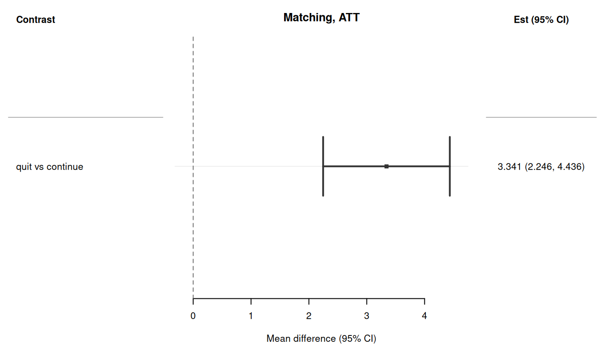
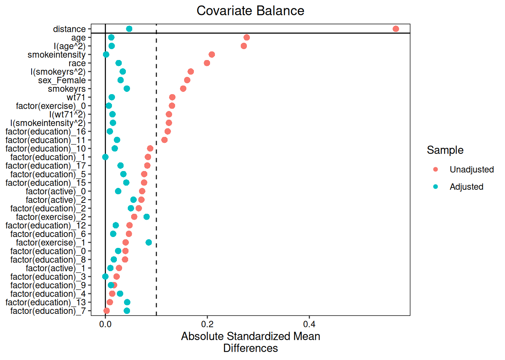

使用 causatr 的倾向评分匹配
Propensity score matching with causatr · causatr 官方文档中译
来源：R 包 causatr 官方文档
matching.qmd，MIT 许可。 本页是中译，代码与运行结果直接取自原站的渲染输出，未在本站重新执行。 Copyright (c) 2026 causatr authors；许可证全文见原仓库LICENSE.md。
倾向评分匹配把倾向评分相近的处理个体与对照个体配成对，再在匹配集内比较结局， 由此估计因果效应。causatr 把匹配的构造交给 MatchIt (Ho 等 2011)，并在匹配样本上 拟合结局模型。推断走统一的影响函数方差引擎（variance_if()）：IF 在匹配样本上 计算，并在匹配对子类上按聚类稳健方式汇总 —— 这是 sandwich::vcovCL() 的 IF 对应形式，推导见 vignettes/variance-theory.qmd §4.3。
本文用 Hernán 和 Robins (2025) 的 NHEFS 数据集演示 causatr 中的倾向评分匹配，覆盖时间固定 处理下所支持的全部处理类型、结局类型、对比尺度与推断方法组合。
注意： 匹配只支持 static() 干预和二值点处理。MatchIt 本身只能处理 二值情形，因此分类（k > 2 个水平）处理和连续处理会在一开始就被拒绝并给出明确 报错 —— 这类情形请改用 estimator = "gcomp" 或 estimator = "ipw"。纵向匹配 同样不支持。对于修正处理策略（平移 / 缩放 / 阈值 / 动态 / MTP），请使用 G-computation（见 vignette("gcomp")）。
数据：NHEFS
所有示例都使用 NHEFS 数据集 (Hernán 和 Robins 2025)。假定的因果结构是：
- 处理（\(A\)）：
qsmk—— 1971 至 1982 年间是否戒烟（二值：0/1）。 - 结局（\(Y\)）：
wt82_71—— 以 kg 计的体重变化（连续），或gained_weight（\(\mathbf{1}\{Y > 0\}\)，二值）。 - 混杂因子（\(L\)）： 性别、年龄、种族、教育程度、吸烟强度、吸烟年数、锻炼、 体力活动和基线体重 —— 它们是 \(A\) 与 \(Y\) 的共同原因。
倾向评分匹配的做法是构造一个匹配样本，使 \(L\) 的分布在各处理组间（近似）均衡， 再在匹配集内比较结局，由此估计 \(\mathbb{E}[Y^{a=1}] - \mathbb{E}[Y^{a=0}]\)。
library(causatr)
library(tinytable)
library(tinyplot)
data("nhefs")
nhefs_complete <- nhefs[complete.cases(nhefs), ]
nhefs_complete$gained_weight <- as.integer(nhefs_complete$wt82_71 > 0)
nhefs_complete$sex <- factor(
nhefs_complete$sex,
levels = 0:1,
labels = c("Male", "Female")
)二值处理、连续结局
按 Hernán 和 Robins (2025) 第 15 章的做法，用匹配估计戒烟对体重变化的效应。
ATT（三明治 SE）
匹配天然以 ATT（处理组上的效应）为目标，这也是最近邻匹配的默认设置。
fit_m <- causat(
nhefs_complete,
outcome = "wt82_71",
treatment = "qsmk",
confounders = ~ sex + age + I(age^2) + race + factor(education) +
smokeintensity + I(smokeintensity^2) + smokeyrs + I(smokeyrs^2) +
factor(exercise) + factor(active) + wt71 + I(wt71^2),
estimator = "matching",
estimand = "ATT"
)
res_att_sw <- contrast(
fit_m,
interventions = list(quit = static(1), continue = static(0)),
reference = "continue",
type = "difference",
ci_method = "sandwich"
)
res_att_sw| intervention | estimate | se | ci_lower | ci_upper |
|---|---|---|---|---|
| quit | 4.525 | 0.435 | 3.672 | 5.378 |
| continue | 1.184 | 0.383 | 0.433 | 1.935 |
| comparison | estimate | se | ci_lower | ci_upper |
|---|---|---|---|---|
| quit vs continue | 3.341 | 0.559 | 2.246 | 4.436 |
ATT（bootstrap SE）
bootstrap 对个体重抽样，在每个 bootstrap 样本上重新匹配并重新拟合结局模型， 从而完整计入匹配带来的不确定性。
res_att_bs <- contrast(
fit_m,
interventions = list(quit = static(1), continue = static(0)),
reference = "continue",
type = "difference",
ci_method = "bootstrap",
n_boot = 50L
)
res_att_bs| intervention | estimate | se | ci_lower | ci_upper |
|---|---|---|---|---|
| quit | 4.525 | 0.413 | 3.81 | 5.205 |
| continue | 1.184 | 0.384 | 0.529 | 1.98 |
| comparison | estimate | se | ci_lower | ci_upper |
|---|---|---|---|---|
| quit vs continue | 3.341 | 0.614 | 2.013 | 4.287 |
ATE 估计目标
对 ATE，MatchIt 做的是全匹配（每个个体都得到一个权重），而不是 1:1 最近邻 匹配。
fit_m_ate <- causat(
nhefs_complete,
outcome = "wt82_71",
treatment = "qsmk",
confounders = ~ sex + age + I(age^2) + race + factor(education) +
smokeintensity + I(smokeintensity^2) + smokeyrs + I(smokeyrs^2) +
factor(exercise) + factor(active) + wt71 + I(wt71^2),
estimator = "matching",
estimand = "ATE"
)
res_ate_sw <- contrast(
fit_m_ate,
interventions = list(quit = static(1), continue = static(0)),
reference = "continue",
type = "difference",
ci_method = "sandwich"
)
res_ate_sw| intervention | estimate | se | ci_lower | ci_upper |
|---|---|---|---|---|
| quit | 5.442 | 0.55 | 4.364 | 6.519 |
| continue | 1.831 | 0.241 | 1.359 | 2.303 |
| comparison | estimate | se | ci_lower | ci_upper |
|---|---|---|---|---|
| quit vs continue | 3.611 | 0.578 | 2.479 | 4.743 |
用 bootstrap SE 的 ATE
res_ate_bs <- contrast(
fit_m_ate,
interventions = list(quit = static(1), continue = static(0)),
reference = "continue",
type = "difference",
ci_method = "bootstrap",
n_boot = 50L
)
res_ate_bs| intervention | estimate | se | ci_lower | ci_upper |
|---|---|---|---|---|
| quit | 5.442 | 0.606 | 3.918 | 6.241 |
| continue | 1.831 | 0.223 | 1.421 | 2.356 |
| comparison | estimate | se | ci_lower | ci_upper |
|---|---|---|---|---|
| quit vs continue | 3.611 | 0.603 | 2.145 | 4.39 |
带外部调查权重的 ATT
预先算好的调查权重通过 weights = 传给 causat()（可以是数值向量，也可以是 survey::svydesign 对象——后者会被自动拆包），并由 check_weights() 在一开始 完成校验。causatr 内部把调查权重乘以 MatchIt 给出的匹配权重；合成后的 权重驱动匹配样本上的结局模型拟合，并通过 prior.weights 进入聚类稳健的 IF 方差。匹配样本与用户提供的权重之间的行对齐由 combine_match_and_external_weights()（定义在 R/matching.R）处理，因此这条 不变量只在一处断言。
在 estimator = "matching" 下，causat(cluster = ...) 和 contrast(cluster = ...) 会以 causatr_bad_cluster 中止并被拒绝。匹配样本 已经按 subclass（配对或层）做了聚类稳健的聚合，用户提供的设计聚类要么与之 冲突，要么会对子类内的行重复计数。如果设计聚类在匹配结构之外（中心、家庭、 PSU），请改用 estimator = "gcomp" 或 "ipw"——两者都通过 cluster = 提供 同样的「先在聚类内求和、再平方」的 IF 聚合。
同样，在匹配下把带有非平凡 PSU 的 survey::svydesign 对象传给 weights = 也会中止：该设计的第一阶段聚类会落进聚类槽位，触发同一条拒绝规则。请用 svydesign(ids = ~1, weights = ~pw, data = d) 声明一个只含抽样权重的设计 （不含聚类），或者直接以数值向量提供权重。
set.seed(42)
# Synthetic survey weights unrelated to the outcome — demonstrates the
# plumbing without introducing real bias.
svy_w <- runif(nrow(nhefs_complete), 0.5, 2.0)
fit_m_sv <- causat(
nhefs_complete,
outcome = "wt82_71",
treatment = "qsmk",
confounders = ~ sex + age + I(age^2) + race + factor(education) +
smokeintensity + I(smokeintensity^2) + smokeyrs + I(smokeyrs^2) +
factor(exercise) + factor(active) + wt71 + I(wt71^2),
estimator = "matching",
estimand = "ATT",
weights = svy_w
)
res_m_sv <- contrast(
fit_m_sv,
interventions = list(quit = static(1), continue = static(0)),
reference = "continue",
type = "difference",
ci_method = "sandwich"
)
res_m_sv| intervention | estimate | se | ci_lower | ci_upper |
|---|---|---|---|---|
| quit | 4.576 | 0.456 | 3.683 | 5.469 |
| continue | 1.424 | 0.386 | 0.667 | 2.181 |
| comparison | estimate | se | ci_lower | ci_upper |
|---|---|---|---|---|
| quit vs continue | 3.152 | 0.593 | 1.99 | 4.315 |
ATC 估计目标
ATC 针对的是对照组（即继续吸烟的人）中的效应。
fit_m_atc <- causat(
nhefs_complete,
outcome = "wt82_71",
treatment = "qsmk",
confounders = ~ sex + age + I(age^2) + race + factor(education) +
smokeintensity + I(smokeintensity^2) + smokeyrs + I(smokeyrs^2) +
factor(exercise) + factor(active) + wt71 + I(wt71^2),
estimator = "matching",
estimand = "ATC"
)
#> Fewer treated units than control units; not all control units will get
#> a match.
res_atc <- contrast(
fit_m_atc,
interventions = list(quit = static(1), continue = static(0)),
reference = "continue",
type = "difference",
ci_method = "sandwich"
)
res_atc| intervention | estimate | se | ci_lower | ci_upper |
|---|---|---|---|---|
| quit | 4.525 | 0.435 | 3.672 | 5.378 |
| continue | 3.203 | 0.355 | 2.507 | 3.899 |
| comparison | estimate | se | ci_lower | ci_upper |
|---|---|---|---|---|
| quit vs continue | 1.322 | 0.579 | 0.187 | 2.457 |
以编程方式提取结果
coef(res_att_sw)
#> quit continue
#> 4.525079 1.184069
confint(res_att_sw)
#> lower upper
#> quit 3.6720225 5.378136
#> continue 0.4328705 1.935267
vcov(res_att_sw)
#> quit continue
#> quit 0.18943466 0.01213288
#> continue 0.01213288 0.14689705
tidy(res_att_sw)
#> term estimate std.error type conf.low conf.high
#> 1 quit vs continue 3.34101 0.5586286 contrast 2.246118 4.435902
glance(res_att_sw)
#> estimator estimand contrast_type ci_method n n_interventions
#> 1 matching ATT difference sandwich 403 2二值处理、二值结局
把 gained_weight 指示变量用作二值结局。匹配样本上的结局模型仍然是 Y ~ A（线性概率模型），因此 contrast() 会从加权预测值计算边际风险。
风险差（三明治）
fit_m_bin <- causat(
nhefs_complete,
outcome = "gained_weight",
treatment = "qsmk",
confounders = ~ sex + age + I(age^2) + race + factor(education) +
smokeintensity + I(smokeintensity^2) + smokeyrs + I(smokeyrs^2) +
factor(exercise) + factor(active) + wt71 + I(wt71^2),
estimator = "matching",
estimand = "ATT"
)
res_rd <- contrast(
fit_m_bin,
interventions = list(quit = static(1), continue = static(0)),
reference = "continue",
type = "difference",
ci_method = "sandwich"
)
res_rd| intervention | estimate | se | ci_lower | ci_upper |
|---|---|---|---|---|
| quit | 0.742 | 0.022 | 0.699 | 0.785 |
| continue | 0.593 | 0.024 | 0.545 | 0.641 |
| comparison | estimate | se | ci_lower | ci_upper |
|---|---|---|---|---|
| quit vs continue | 0.149 | 0.032 | 0.087 | 0.211 |
风险差（bootstrap）
res_rd_bs <- contrast(
fit_m_bin,
interventions = list(quit = static(1), continue = static(0)),
reference = "continue",
type = "difference",
ci_method = "bootstrap",
n_boot = 50L
)
res_rd_bs| intervention | estimate | se | ci_lower | ci_upper |
|---|---|---|---|---|
| quit | 0.742 | 0.022 | 0.701 | 0.782 |
| continue | 0.593 | 0.025 | 0.578 | 0.666 |
| comparison | estimate | se | ci_lower | ci_upper |
|---|---|---|---|---|
| quit vs continue | 0.149 | 0.03 | 0.076 | 0.18 |
风险比
res_rr <- contrast(
fit_m_bin,
interventions = list(quit = static(1), continue = static(0)),
reference = "continue",
type = "ratio",
ci_method = "sandwich"
)
res_rr| intervention | estimate | se | ci_lower | ci_upper |
|---|---|---|---|---|
| quit | 0.742 | 0.022 | 0.699 | 0.785 |
| continue | 0.593 | 0.024 | 0.545 | 0.641 |
| comparison | estimate | se | ci_lower | ci_upper |
|---|---|---|---|---|
| quit vs continue | 1.251 | 0.061 | 1.136 | 1.377 |
比值比
res_or <- contrast(
fit_m_bin,
interventions = list(quit = static(1), continue = static(0)),
reference = "continue",
type = "or",
ci_method = "sandwich"
)
res_or| intervention | estimate | se | ci_lower | ci_upper |
|---|---|---|---|---|
| quit | 0.742 | 0.022 | 0.699 | 0.785 |
| continue | 0.593 | 0.024 | 0.545 | 0.641 |
| comparison | estimate | se | ci_lower | ci_upper |
|---|---|---|---|---|
| quit vs continue | 1.973 | 0.291 | 1.478 | 2.634 |
风险比（bootstrap）
res_rr_bs <- contrast(
fit_m_bin,
interventions = list(quit = static(1), continue = static(0)),
reference = "continue",
type = "ratio",
ci_method = "bootstrap",
n_boot = 50L
)
res_rr_bs| intervention | estimate | se | ci_lower | ci_upper |
|---|---|---|---|---|
| quit | 0.742 | 0.021 | 0.703 | 0.778 |
| continue | 0.593 | 0.029 | 0.557 | 0.656 |
| comparison | estimate | se | ci_lower | ci_upper |
|---|---|---|---|---|
| quit vs continue | 1.251 | 0.064 | 1.126 | 1.322 |
Quasibinomial 结局
当二值结局出现过度离散，或者你想在不加严格二项方差假设的前提下得到保守的 SE 时， 使用 family = "quasibinomial"：
fit_m_quasi <- causat(
nhefs_complete,
outcome = "gained_weight",
treatment = "qsmk",
confounders = ~ sex + age + I(age^2) + race + factor(education) +
smokeintensity + I(smokeintensity^2) + smokeyrs + I(smokeyrs^2) +
factor(exercise) + factor(active) + wt71 + I(wt71^2),
estimator = "matching",
estimand = "ATT",
family = "quasibinomial"
)
res_quasi <- contrast(
fit_m_quasi,
interventions = list(quit = static(1), continue = static(0)),
reference = "continue",
type = "difference",
ci_method = "sandwich"
)
res_quasi| intervention | estimate | se | ci_lower | ci_upper |
|---|---|---|---|---|
| quit | 0.742 | 0.022 | 0.699 | 0.785 |
| continue | 0.593 | 0.024 | 0.545 | 0.641 |
| comparison | estimate | se | ci_lower | ci_upper |
|---|---|---|---|---|
| quit vs continue | 0.149 | 0.032 | 0.087 | 0.211 |
tt(tidy(res_quasi), digits = 3)| term | estimate | std.error | type | conf.low | conf.high |
|---|---|---|---|---|---|
| quit vs continue | 0.149 | 0.0317 | contrast | 0.0868 | 0.211 |
比较不同估计目标
results_list <- list(
data.frame(
estimand = "ATT",
estimate = res_att_sw$contrasts$estimate[1],
ci_lower = res_att_sw$contrasts$ci_lower[1],
ci_upper = res_att_sw$contrasts$ci_upper[1]
),
data.frame(
estimand = "ATC",
estimate = res_atc$contrasts$estimate[1],
ci_lower = res_atc$contrasts$ci_lower[1],
ci_upper = res_atc$contrasts$ci_upper[1]
)
)
if (requireNamespace("optmatch", quietly = TRUE)) {
results_list <- c(list(data.frame(
estimand = "ATE",
estimate = res_ate_sw$contrasts$estimate[1],
ci_lower = res_ate_sw$contrasts$ci_lower[1],
ci_upper = res_ate_sw$contrasts$ci_upper[1]
)), results_list)
}
est_df <- do.call(rbind, results_list)
tinyplot(
estimate ~ estimand,
data = est_df,
type = "pointrange",
ymin = est_df$ci_lower,
ymax = est_df$ci_upper,
xlab = "Estimand",
ylab = "Effect on weight change (kg)",
main = "Matching estimates by estimand"
)
abline(h = 0, lty = 2, col = "grey40")
转发 MatchIt 参数（CEM）
传给 causat() 的任何额外参数都会经由 ... 直接进入 MatchIt::matchit()。由于 causatr 的参数现在叫 estimator（而不是 method），MatchIt 自己的 method = "..." 就空了出来，你可以选用 非默认的匹配算法。下面的例子把默认的最近邻匹配器换成 粗化精确匹配 (Iacus, King, 和 Porro 2012)，它内置于 MatchIt，不需要额外的包。 其他可转发的取值包括 "optimal"（需要 optmatch）、 "genetic"（需要 Matching）、"cardinality"（需要 LP 求解器）， 以及 MatchIt 完整的 method 列表。
fit_cem <- causat(
nhefs_complete,
outcome = "wt82_71",
treatment = "qsmk",
confounders = ~ sex + age + race + factor(education) +
smokeintensity + smokeyrs + factor(exercise) + factor(active) + wt71,
estimator = "matching",
estimand = "ATT",
method = "cem" # forwarded to MatchIt::matchit()
)
res_cem <- contrast(
fit_cem,
interventions = list(quit = static(1), continue = static(0)),
reference = "continue",
type = "difference",
ci_method = "sandwich"
)
res_cem| intervention | estimate | se | ci_lower | ci_upper |
|---|---|---|---|---|
| quit | 4.446 | 1.496 | 1.515 | 7.378 |
| continue | 2.894 | 1.295 | 0.357 | 5.431 |
| comparison | estimate | se | ci_lower | ci_upper |
|---|---|---|---|---|
| quit vs continue | 1.552 | 1.422 | -1.235 | 4.339 |
MatchIt 的其他调节参数（ratio、replace、caliper、distance、 k2k、…）都可以用同样的方式传入。
用 by 刻画效应修饰
当 confounders 中包含 A:modifier 交互项时，匹配会把结局 MSM 从 Y ~ A 扩展为 Y ~ A + modifier + A:modifier。饱和的 MSM 可以在匹配 样本上还原出各层特有的处理效应。在 contrast() 中使用 by = "modifier" 即可得到异质性处理效应。
这里我们加入 qsmk:sex 交互项，考察戒烟对体重变化的效应如何随性别 不同而变化。匹配所用的倾向评分模型会自动剔除该交互项。
fit_m_hte <- causat(
nhefs_complete,
outcome = "wt82_71",
treatment = "qsmk",
confounders = ~ sex + age + I(age^2) + race + factor(education) +
smokeintensity + I(smokeintensity^2) + smokeyrs + I(smokeyrs^2) +
factor(exercise) + factor(active) + wt71 + I(wt71^2) +
qsmk:sex,
estimator = "matching"
)
res_m_by_sex <- contrast(
fit_m_hte,
interventions = list(quit = static(1), continue = static(0)),
reference = "continue",
type = "difference",
ci_method = "sandwich",
by = "sex"
)
res_m_by_sex| intervention | estimate | se | ci_lower | ci_upper | by | n_by |
|---|---|---|---|---|---|---|
| quit | 4.995 | 0.551 | 3.915 | 6.076 | Male | 762 |
| continue | 1.938 | 0.241 | 1.465 | 2.411 | Male | 762 |
| quit | 5.906 | 0.551 | 4.825 | 6.987 | Female | 804 |
| continue | 1.727 | 0.241 | 1.254 | 2.201 | Female | 804 |
| comparison | estimate | se | ci_lower | ci_upper | by | n_by |
|---|---|---|---|---|---|---|
| quit vs continue | 3.057 | 0.579 | 1.923 | 4.191 | Male | 762 |
| quit vs continue | 4.178 | 0.579 | 3.045 | 5.312 | Female | 804 |
匹配的这种扩展方式与 IPW 不同：因为匹配权重是子类指示变量（而不是 密度比权重），处理不会被权重吸收掉。所以结局 MSM 必须同时包含 A、modifier 和 A:modifier — 即处理与修饰因子交互的完整饱和 模型。用于构造匹配的倾向评分模型会自动剔除 A:modifier 项。
Tidy 与 glance
causatr 的结果可以通过 tidy() 和 glance() 接入 broom 生态：
tidy(res_att_sw)
#> term estimate std.error type conf.low conf.high
#> 1 quit vs continue 3.34101 0.5586286 contrast 2.246118 4.435902
glance(res_att_sw)
#> estimator estimand contrast_type ci_method n n_interventions
#> 1 matching ATT difference sandwich 403 2森林图
plot() 方法会使用 forrest 包生成森林图。
plot(res_att_sw)
诊断
拟合匹配模型之后，用 diagnose() 评估协变量均衡和匹配质量。均衡诊断 借助 cobalt 比较匹配前后的 SMD。
diag <- diagnose(fit_m)
diag
#> <causatr_diag>
#> Estimator:matching
#> Treatment: binary
#> Estimand: ATT
#>
#> Positivity:
#> statistic value
#> <char> <num>
#> min 2.667709e-07
#> q25 1.739280e-01
#> median 2.356540e-01
#> q75 3.232473e-01
#> max 8.723380e-01
#> n_below_lower 6.000000e+00
#> n_above_upper 0.000000e+00
#> n_violations 6.000000e+00
#> pct_violations 3.800000e-01
#>
#> Covariate balance:
#> Balance Measures
#> Type Diff.Un V.Ratio.Un Diff.Adj M.Threshold
#> distance Distance 0.5697 1.4784 0.0468 Balanced, <0.1
#> sex_Female Binary -0.1604 . 0.0299 Balanced, <0.1
#> age Contin. 0.2771 1.0731 -0.0116 Balanced, <0.1
#> I(age^2) Contin. 0.2715 1.1632 -0.0123 Balanced, <0.1
#> race Binary -0.1993 . 0.0261 Balanced, <0.1
#> factor(education)_0 Binary 0.0394 . -0.0250 Balanced, <0.1
#> factor(education)_1 Binary -0.0835 . 0.0000 Balanced, <0.1
#> factor(education)_2 Binary 0.0654 . 0.0501 Balanced, <0.1
#> factor(education)_3 Binary 0.0221 . 0.0000 Balanced, <0.1
#> factor(education)_4 Binary -0.0134 . -0.0289 Balanced, <0.1
#> factor(education)_5 Binary -0.0762 . -0.0353 Balanced, <0.1
#> factor(education)_6 Binary 0.0461 . 0.0152 Balanced, <0.1
#> factor(education)_7 Binary 0.0025 . 0.0421 Balanced, <0.1
#> factor(education)_8 Binary 0.0386 . -0.0166 Balanced, <0.1
#> factor(education)_9 Binary 0.0170 . 0.0109 Balanced, <0.1
#> factor(education)_10 Binary -0.0879 . -0.0184 Balanced, <0.1
#> factor(education)_11 Binary -0.1159 . -0.0229 Balanced, <0.1
#> factor(education)_12 Binary -0.0475 . -0.0204 Balanced, <0.1
#> factor(education)_13 Binary 0.0088 . 0.0428 Balanced, <0.1
#> factor(education)_15 Binary -0.0759 . -0.0410 Balanced, <0.1
#> factor(education)_16 Binary 0.1221 . 0.0088 Balanced, <0.1
#> factor(education)_17 Binary 0.0823 . 0.0298 Balanced, <0.1
#> smokeintensity Contin. -0.2087 1.1679 -0.0014 Balanced, <0.1
#> I(smokeintensity^2) Contin. -0.1246 1.1519 0.0148 Balanced, <0.1
#> smokeyrs Contin. 0.1526 1.1846 -0.0421 Balanced, <0.1
#> I(smokeyrs^2) Contin. 0.1675 1.3279 -0.0342 Balanced, <0.1
#> factor(exercise)_0 Binary -0.1307 . 0.0068 Balanced, <0.1
#> factor(exercise)_1 Binary 0.0397 . -0.0851 Balanced, <0.1
#> factor(exercise)_2 Binary 0.0565 . 0.0808 Balanced, <0.1
#> factor(active)_0 Binary -0.0721 . -0.0251 Balanced, <0.1
#> factor(active)_1 Binary 0.0268 . -0.0099 Balanced, <0.1
#> factor(active)_2 Binary 0.0706 . 0.0552 Balanced, <0.1
#> wt71 Contin. 0.1313 1.0606 -0.0126 Balanced, <0.1
#> I(wt71^2) Contin. 0.1247 1.0876 -0.0139 Balanced, <0.1
#> V.Ratio.Adj
#> distance 1.2040
#> sex_Female .
#> age 0.9930
#> I(age^2) 1.0026
#> race .
#> factor(education)_0 .
#> factor(education)_1 .
#> factor(education)_2 .
#> factor(education)_3 .
#> factor(education)_4 .
#> factor(education)_5 .
#> factor(education)_6 .
#> factor(education)_7 .
#> factor(education)_8 .
#> factor(education)_9 .
#> factor(education)_10 .
#> factor(education)_11 .
#> factor(education)_12 .
#> factor(education)_13 .
#> factor(education)_15 .
#> factor(education)_16 .
#> factor(education)_17 .
#> smokeintensity 1.0721
#> I(smokeintensity^2) 1.0921
#> smokeyrs 1.0200
#> I(smokeyrs^2) 1.0645
#> factor(exercise)_0 .
#> factor(exercise)_1 .
#> factor(exercise)_2 .
#> factor(active)_0 .
#> factor(active)_1 .
#> factor(active)_2 .
#> wt71 0.9769
#> I(wt71^2) 0.9424
#>
#> Balance tally for mean differences
#> count
#> Balanced, <0.1 34
#> Not Balanced, >0.1 0
#>
#> Variable with the greatest mean difference
#> Variable Diff.Adj M.Threshold
#> factor(exercise)_1 -0.0851 Balanced, <0.1
#>
#> Sample sizes
#> Control Treated
#> All 1163 403
#> Matched 403 403
#> Unmatched 760 0
#>
#> Match quality:
#> statistic value
#> <char> <num>
#> n_total 1566.0
#> n_matched 806.0
#> n_discarded 760.0
#> pct_retained 51.5Love 图
plot(diag)
匹配质量
diag$match_quality
#> statistic value
#> <char> <num>
#> 1: n_total 1566.0
#> 2: n_matched 806.0
#> 3: n_discarded 760.0
#> 4: pct_retained 51.5已覆盖组合汇总
图例。 ✅ 已覆盖，并在测试中锚定真值 · 🟡 仅有冒烟测试 · ⛔ 会给出带说明的报错并拒绝。
| Treatment | Outcome | Intervention | Estimand | Contrast | Inference | Weights | Status |
|---|---|---|---|---|---|---|---|
| 二值 | 连续 | 静态 | ATT | 差值 | 三明治 | 无 | ✅ |
| 二值 | 连续 | 静态 | ATT | 差值 | bootstrap | 无 | ✅ |
| 二值 | 连续 | 静态 | ATT | 差值 | 三明治 | survey | ✅ |
| 二值 | 连续 | 静态 | ATE | 差值 | 三明治 | 无 | ✅ |
| 二值 | 连续 | 静态 | ATE | 差值 | bootstrap | 无 | ✅ |
| 二值 | 连续 | 静态 | ATC | 差值 | 三明治 | 无 | ✅ |
| 二值 | 二值 | 静态 | ATT | 差值 | 三明治 | 无 | ✅ |
| 二值 | 二值 | 静态 | ATT | 差值 | bootstrap | 无 | ✅ |
| 二值 | 二值 | 静态 | ATT | 比值 | 三明治 | 无 | ✅ |
| 二值 | 二值 | 静态 | ATT | OR | 三明治 | 无 | ✅ |
| 二值 | 二值（quasibinomial） | 静态 | ATT | 差值 | 三明治 | 无 | ✅ |
| 二值 | 二值 | 静态 | ATT | 比值 | bootstrap | 无 | ✅ |
| 二值 | Gaussian | 静态 | ATE（含 A:modifier） |
差值 | 三明治 / bootstrap | 无 | ✅ |
| 分类（k>2）/ 连续 | — | — | — | — | — | — | ⛔ 仅支持二值 |
| 任意 | — | 动态 / 平移 / 缩放 / 阈值 / IPSI | — | — | — | — | ⛔ 第 4 阶段 |
每一种方法 × 处理 × 结局 × 干预 × 方差组合的权威覆盖状态， 请查阅 FEATURE_COVERAGE_MATRIX.md。